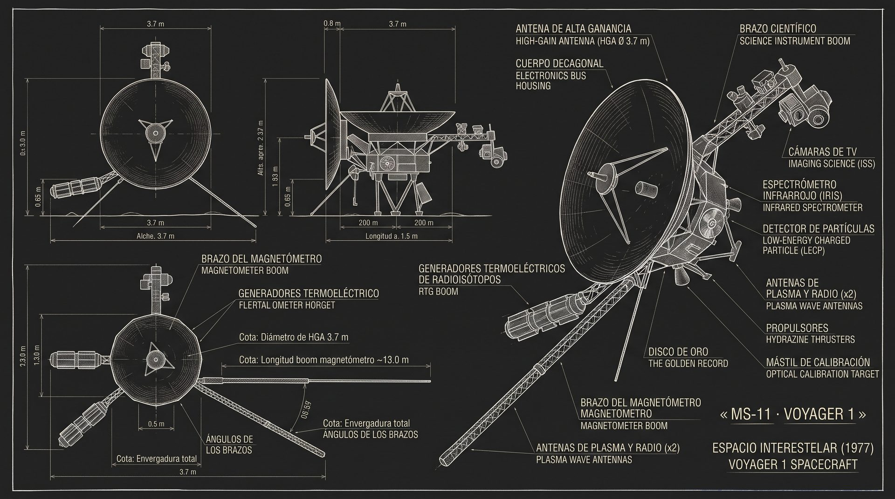

Voyager 1

La primera nave que cruzó la frontera del sistema solar: pasó por Júpiter y Saturno, descubrió los volcanes de Ío y, desde 2012, viaja por el espacio interestelar.
Activa y en contacto con la Tierra desde el espacio interestelar. Personas: Ed Stone
Sigue funcionando: por qué está aquí
Sigue funcionando, y por eso es una excepción en esta web. Está aquí porque su misión ya no puede volver: la NASA le va apagando los instrumentos uno a uno para que la energía dure, y lo que sigue encendido es un resto de lo que fue. Su historia, en cambio, ya está cerrada.
Lo que hizo
- Mi encargo — Salí en 1977 para enseñar de cerca Júpiter y Saturno. Descubrí un anillo fino alrededor de Júpiter y dos lunas nuevas, y en Saturno cinco lunas más y un anillo al que llamaron G.
- El disco de oro — Llevo un disco de oro con saludos en 55 idiomas, imágenes y sonidos de la Tierra. La NASA se lo encargó a Carl Sagan, de la Universidad de Cornell, que eligió qué iba dentro.
- La frontera — En agosto de 2012 crucé la heliopausa y me convertí en el primer objeto construido por personas que salía del escudo del Sol. Sigo en el espacio interestelar, con dos instrumentos funcionando.
Modelo 3D, chat y cómic, en tres idiomas
Fuentes
Ver el índice completo · Proyecto del NASA Space Apps Challenge 2026. Contenido con fuentes citadas.